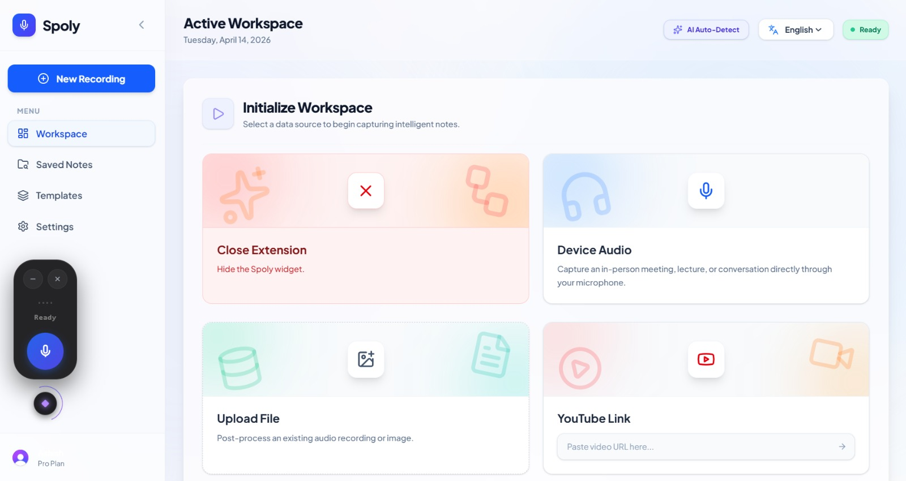
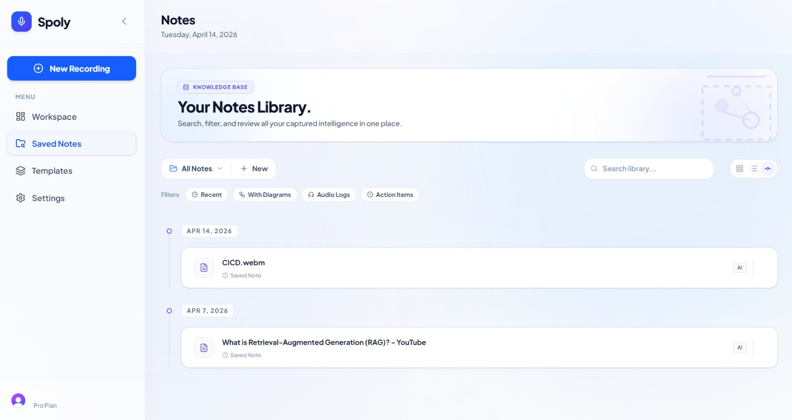
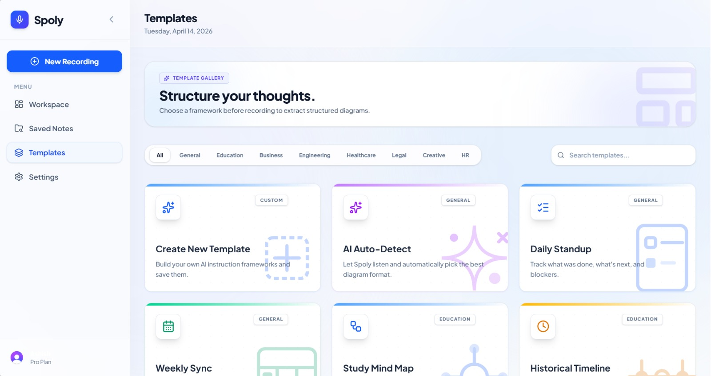
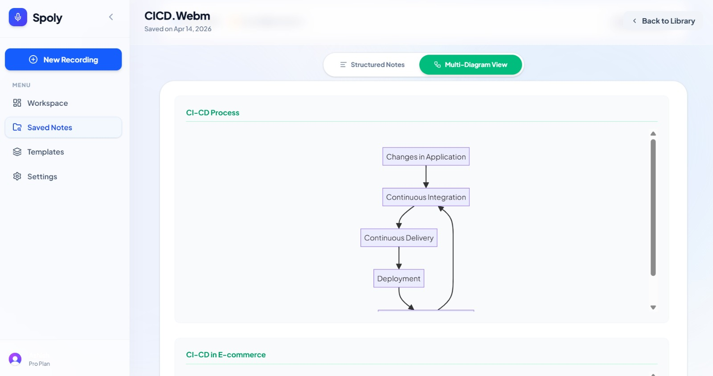

Spoly is a state-of-the-art, AI-driven web application tailored to revolutionize meeting productivity and technical documentation. By leveraging real-time audio and video processing, Spoly autonomously extracts critical conversational logic, action items, and systemic flows. Utilizing a modern React frontend paired with a high-performance Python backend, the system instantly translates complex spoken discussions into structured text and dynamic, visually engaging Mermaid diagrams.
In agile environments, capturing accurate notes and understanding complex systemic flows during live meetings is both challenging and highly prone to human error. Post-meeting documentation often suffers from a severe lack of visual clarity.
Spoly addresses this critical gap by acting as an intelligent virtual scribe. By leveraging advanced natural language processing (NLP), it transcribes live audio feeds and intelligently parses the context into precise visual charts.
The proposed architecture utilizes a highly decoupled, real-time client-server model:
- Frontend Web App: Built with React and Tailwind CSS, providing a responsive interface.
- AI Backend Service: A robust Python-based microservice architecture utilizing STT and NLP models.
- Diagram Engine: Algorithmic translation of NLP output directly into valid Mermaid.js graph code.



Real-Time Data Pipeline: Audio streams are captured via the browser and transmitted to the Python backend over secure web protocols.
NLP & Logic Parsing: The backend transcribes the audio and feeds it through an NLP pipeline trained specifically to recognize architectural patterns.
Syntax Generation: The parsed data is algorithmically mapped into strict Mermaid.js syntax.
- Achieved highly accurate real-time transcription of technical audio, identifying technical jargon effectively.
- Successfully generated precise Mermaid diagrams reflecting conditional logic discussed in the meeting.
- Maintained a zero-latency React frontend UI update mechanism using WebSockets.
- Eliminated manual post-meeting review times entirely.


Spoly successfully demonstrates the powerful integration of artificial intelligence with modern full-stack web technologies to solve significant productivity bottlenecks in professional environments. By combining a heavy-lifting Python AI backend with a dynamic React frontend, the system reliably automates the generation of complex notes and architectural diagrams.
This drastically reduces the time engineers spend on manual documentation, preventing knowledge loss.
- React Documentation. (2025). React: A JavaScript library for building user interfaces. Retrieved from https://reactjs.org/
- Flask Documentation. (2025). Flask: Web development, one drop at a time. Pallets Projects.
- Hugging Face. (2025). Transformers: State-of-the-art Natural Language Processing. Retrieved from https://huggingface.co/docs/transformers
- Mermaid.js. (2025). Markdownish syntax for generating flowcharts, sequence diagrams, class diagrams, gantt charts and git graphs.
- Chrome Developers. (2025). Extensions architecture. Google. Retrieved from https://developer.chrome.com/docs/extensions/
| Vedant Dhotre | 8805187089 | 202401019.vedantvsd@student.xavier.ac.in |
| Aniket Dhoke | 8433998060 | 202401018.aniketssd@student.xavier.ac.in |
| Ashish Chaurasiya | 8652299985 | 202401013.ashishrsc@student.xavier.ac.in |
- M1: To provide the students the knowledge of computer engineering...
- M2: To motivate the students to acquire additional soft skills...
- M3: To inculcate social and professional ethics...
| PO1 | Engineering knowledge |
| PO2 | Problem analysis |
| PO3 | Design/development of solutions |
| PO4 | Conduct investigations of complex problems |
| PO5 | Modern tool usage |
| PO6 | The engineer and society |
| PO7 | Environment and sustainability |
| PO8 | Ethics |
| PO9 | Individual and team work |
| PO10 | Communication |
| PO11 | Project management and finance |
| PO12 | Life-long learning |
| PSO1 | The ability to understand, analyze and apply knowledge to address computing problems. |
| PSO2 | The ability to design and implement software solutions to meet the end users requirements. |
| PO1 | PO2 | PO3 | PO4 | PO5 | PO6 | PO7 | PO8 | PO9 | PO10 | PO11 | PO12 | PSO1 | PSO2 |
| 3 | 2 | 3 | 2 | 3 | 1 | 2 | 1 | 3 | 2 | 2 | 2 | 3 | 3 |